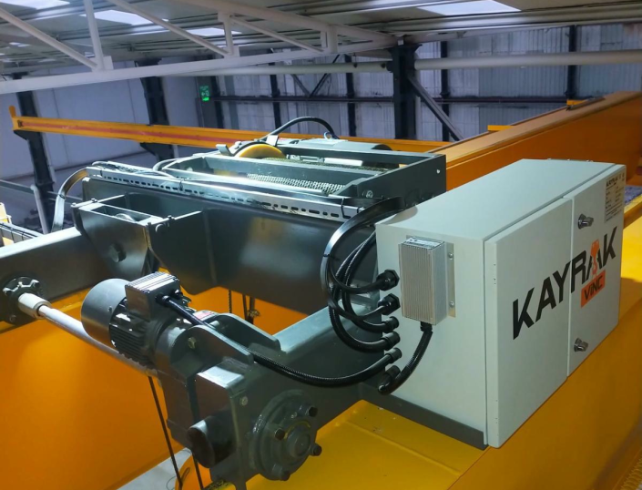
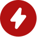

GÜVENİLİR VE DAYANIKLI
TAVAN VİNÇLERİ
Endüstriyel kaldırma ve taşıma ihtiyaçlarınız için tasarlanmış dayanıklı ve yüksek performanslı vinçler, işletmenizin verimliliğini artırarak, Güvenli ve güçlü çözümler sunar.

SEKTÖRE ÖZEL ETKİLİ ÇÖZÜMLER
KAYRAK VİNÇ, vinç imalatı ve ağır kaldırma ekipmanları alanında sunduğu yenilikçi çözümlerle endüstriyel ihtiyaçlara yüksek kaliteli yanıtlar vermektedir. Farklı sektörlerin özel taleplerine yönelik, projelendirme, üretim ve satış sonrası destek hizmetleriyle çözüm ortağı olarak faaliyet göstermektedir.
Müşteri odaklı yaklaşımı ve güçlü mühendislik altyapısıyla Kayrak Vinç, üretim süreçlerinde verimliliği artırırken, iş güvenliği ve dayanıklılık standartlarını da en üst seviyede tutmaktadır. Uzman kadrosu ve yıllara dayanan tecrübesiyle, portal vinçlerden tavan vinçlerine, özel tasarım kaldırma sistemlerinden modern otomasyon çözümlerine kadar geniş bir ürün yelpazesi sunmaktadır.